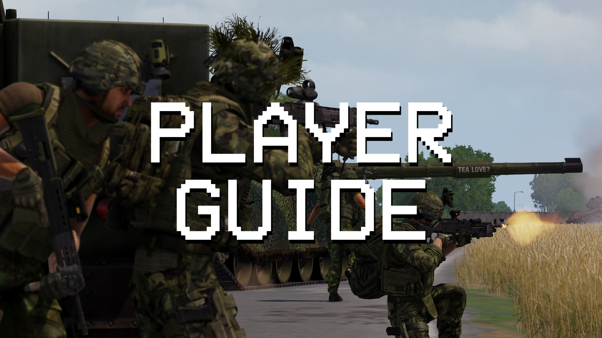
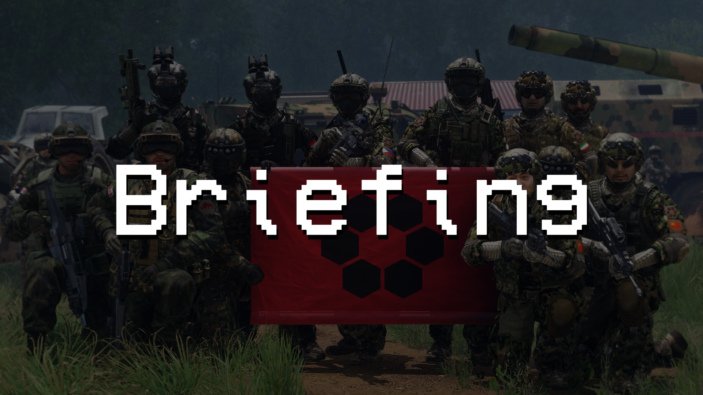
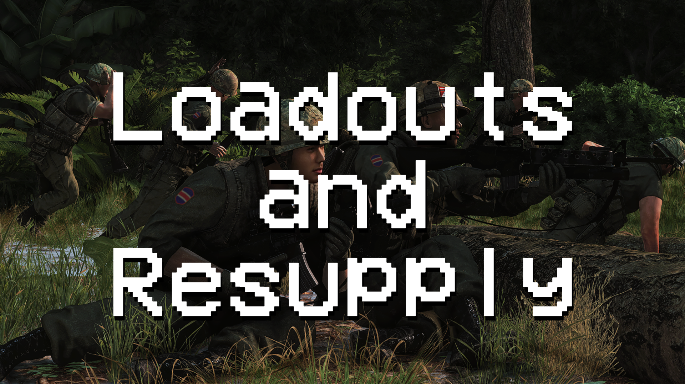
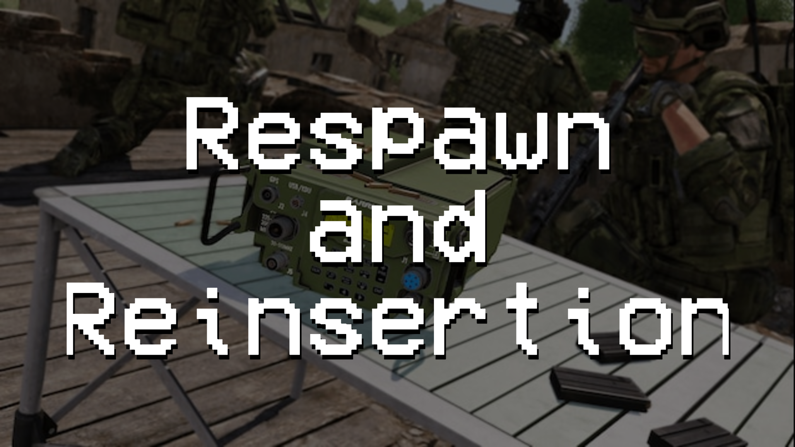
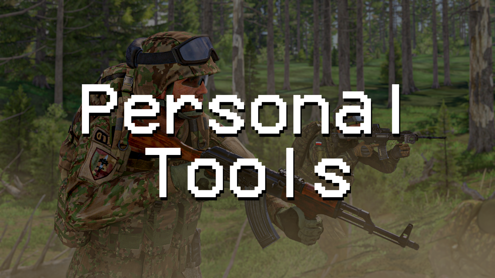

Join and prepare
Take your assigned slot, check your role and equipment, configure radios and wait through safe start.
What the JM Mission Framework does, how Misfits missions use it, and the systems you may interact with during an operation.
The Framework is the common foundation beneath many of our missions. It gives mission makers a dependable set of configurable systems while making different operations feel consistent to players. A mission may use all, some or none of the optional features described here.

The exact scenario changes, but the Framework handles many of the surrounding systems in a familiar way.
Take your assigned slot, check your role and equipment, configure radios and wait through safe start.
Review the plan, objectives, enemy, civilians, rules of engagement, signals and available support.
Move with your element, use the systems enabled for that mission and preserve your assigned role.
If respawn is enabled, regroup, resupply and use an available redeployment method.

Your lobby slot determines your group, role and any special permissions configured by the mission maker. The Framework may show a role card after the introduction so you can confirm what you are expected to do.
Leadership, medic, engineer, JTAC and other specialist flags can control access to equipment or actions. If your role changes during the mission, supported permissions update with it.
A mission maker may give you a complete fixed loadout, or provide a role-restricted ACE Arsenal containing common equipment and items appropriate to your role. Check weapons, magazines, medical supplies, navigation equipment and radios before leaving.
When Framework loadout persistence is enabled, the gear you leave the arsenal with becomes the loadout restored after respawn. Looted equipment may not be supported by the mission's resupply system.

Framework respawn is normally centralised at a FOB, staging area or other safe location. The intention is to make reinsertion a deliberate reinforcement rather than an instant frontline respawn.
An eligible squad leader can place a rally for their element. Players can redeploy to it while it remains valid and free from nearby enemies.
A designated platoon leader can create a wider team rally. It uses the same safety restrictions and should be positioned with the whole force in mind.
Some missions allow direct redeployment to a living squad member. Enemy proximity can block unsafe destinations.
If teleport options are unavailable, the deployment station can send a pickup request to pilots, logistics or the wider force.

Before redeploying: check the map, contact your element, replace missing equipment and make sure the destination is still sensible. Repeatedly spawning into an overrun rally helps nobody.
When enabled, a supply point lets players request mission-approved ammunition, medical, engineering, CSW or custom crates. Crate contents are generated from the operation's configured equipment rather than providing an unrestricted arsenal.
Requested crates may be handed directly to the requesting player through ACE carrying so they can immediately move or load them. Availability, limits and cooldowns depend on the mission.
Designated JTAC players may receive an interaction for the support terminal. The available aircraft, artillery or other support is entirely mission-dependent; receiving the JTAC role during play should also grant the associated access.
Some vehicle-focused missions provide configurable repair, refuel and rearm points. Move the vehicle into the marked service area and follow the mission's instructions rather than assuming every base object provides service.
Respawn may be unlimited, limited by team tickets or disabled. The deployment station and role restoration only appear where the mission maker has enabled them.
Some operations can lock dead players out of further participation. Treat any permadeath warning seriously; it is a deliberate mission rule.
ACE unconsciousness is not death. Remain available for treatment and use permitted spectator communication appropriately. The Framework coordinates transitions into death or spectator systems when required.
Framework missions may finish through a controlled ending and debrief sequence. Stay until it completes so the operation ends cleanly and any enabled statistics export is produced.
Insert or remove the Framework's virtual earplugs without losing their state when entering an arsenal.
Temporarily hides the vanilla HUD and supported overlays such as DUI for clean screenshots. Re-enable the interface when finished.
The mission may tune or disable Arma's stamina and fatigue behaviour to suit the type of operation being played.
Mission-configured labels can identify players, locations or important objects without every mission recreating the system.
Prevents the operation beginning before players have loaded, organised and received the mission introduction.
The Framework can identify unsupported weapons or ammunition that may not be available through mission resupply.

Mission makers: this page intentionally avoids setup instructions. See the JM Framework Documentation for components, Eden modules, CBA settings and implementation details.